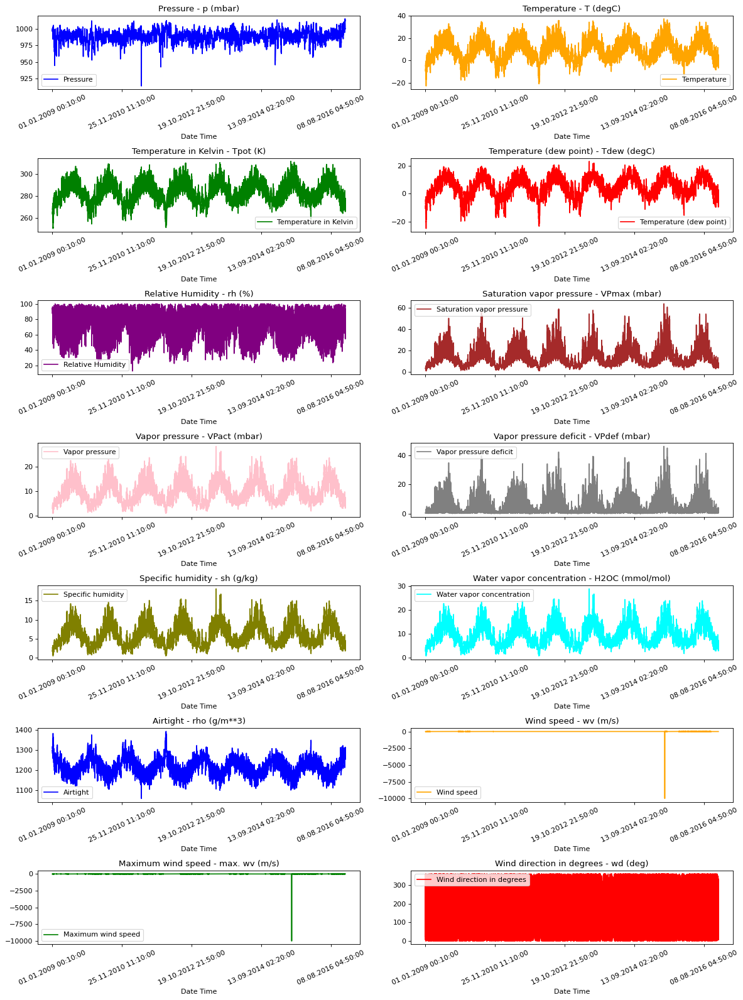
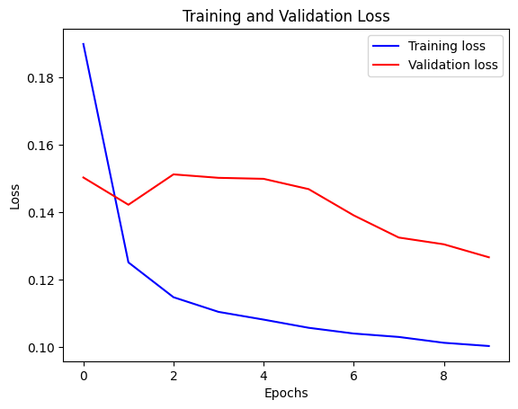
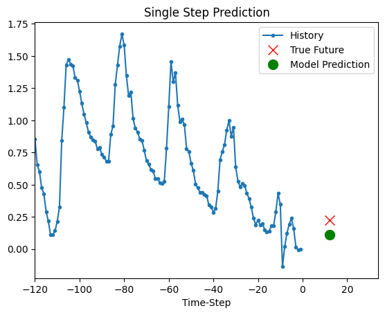
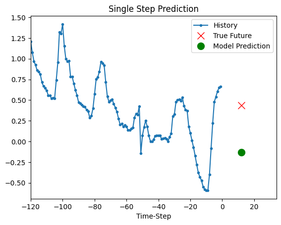
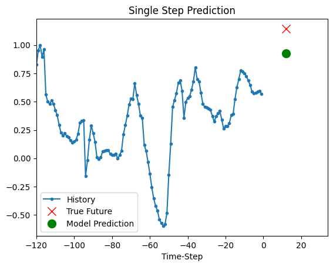
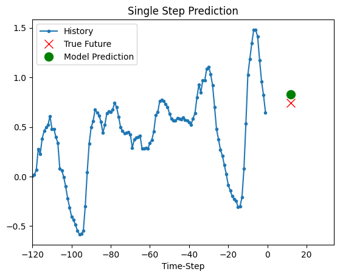
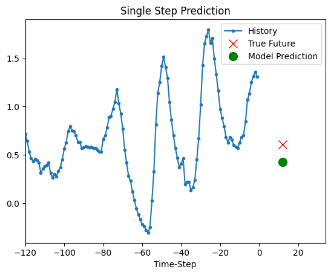

Timeseries forecasting for weather prediction
Authors: Prabhanshu Attri, Yashika Sharma, Kristi Takach, Falak Shah
Date created: 2020/06/23
Last modified: 2023/11/22
Description: This notebook demonstrates how to do timeseries forecasting using a LSTM model.

Setup
import pandas as pd
import matplotlib.pyplot as plt
import keras
Climate Data Time-Series
We will be using Jena Climate dataset recorded by the Max Planck Institute for Biogeochemistry. The dataset consists of 14 features such as temperature, pressure, humidity etc, recorded once per 10 minutes.
Location: Weather Station, Max Planck Institute for Biogeochemistry in Jena, Germany
Time-frame Considered: Jan 10, 2009 - December 31, 2016
The table below shows the column names, their value formats, and their description.
| Index | Features | Format | Description |
|---|---|---|---|
| 1 | Date Time | 01.01.2009 00:10:00 | Date-time reference |
| 2 | p (mbar) | 996.52 | The pascal SI derived unit of pressure used to quantify internal pressure. Meteorological reports typically state atmospheric pressure in millibars. |
| 3 | T (degC) | -8.02 | Temperature in Celsius |
| 4 | Tpot (K) | 265.4 | Temperature in Kelvin |
| 5 | Tdew (degC) | -8.9 | Temperature in Celsius relative to humidity. Dew Point is a measure of the absolute amount of water in the air, the DP is the temperature at which the air cannot hold all the moisture in it and water condenses. |
| 6 | rh (%) | 93.3 | Relative Humidity is a measure of how saturated the air is with water vapor, the %RH determines the amount of water contained within collection objects. |
| 7 | VPmax (mbar) | 3.33 | Saturation vapor pressure |
| 8 | VPact (mbar) | 3.11 | Vapor pressure |
| 9 | VPdef (mbar) | 0.22 | Vapor pressure deficit |
| 10 | sh (g/kg) | 1.94 | Specific humidity |
| 11 | H2OC (mmol/mol) | 3.12 | Water vapor concentration |
| 12 | rho (g/m ** 3) | 1307.75 | Airtight |
| 13 | wv (m/s) | 1.03 | Wind speed |
| 14 | max. wv (m/s) | 1.75 | Maximum wind speed |
| 15 | wd (deg) | 152.3 | Wind direction in degrees |
from zipfile import ZipFile
uri = "https://storage.googleapis.com/tensorflow/tf-keras-datasets/jena_climate_2009_2016.csv.zip"
zip_path = keras.utils.get_file(origin=uri, fname="jena_climate_2009_2016.csv.zip")
zip_file = ZipFile(zip_path)
zip_file.extractall()
csv_path = "jena_climate_2009_2016.csv"
df = pd.read_csv(csv_path)
Raw Data Visualization
To give us a sense of the data we are working with, each feature has been plotted below. This shows the distinct pattern of each feature over the time period from 2009 to 2016. It also shows where anomalies are present, which will be addressed during normalization.
titles = [
"Pressure",
"Temperature",
"Temperature in Kelvin",
"Temperature (dew point)",
"Relative Humidity",
"Saturation vapor pressure",
"Vapor pressure",
"Vapor pressure deficit",
"Specific humidity",
"Water vapor concentration",
"Airtight",
"Wind speed",
"Maximum wind speed",
"Wind direction in degrees",
]
feature_keys = [
"p (mbar)",
"T (degC)",
"Tpot (K)",
"Tdew (degC)",
"rh (%)",
"VPmax (mbar)",
"VPact (mbar)",
"VPdef (mbar)",
"sh (g/kg)",
"H2OC (mmol/mol)",
"rho (g/m**3)",
"wv (m/s)",
"max. wv (m/s)",
"wd (deg)",
]
colors = [
"blue",
"orange",
"green",
"red",
"purple",
"brown",
"pink",
"gray",
"olive",
"cyan",
]
date_time_key = "Date Time"
def show_raw_visualization(data):
time_data = data[date_time_key]
fig, axes = plt.subplots(
nrows=7, ncols=2, figsize=(15, 20), dpi=80, facecolor="w", edgecolor="k"
)
for i in range(len(feature_keys)):
key = feature_keys[i]
c = colors[i % (len(colors))]
t_data = data[key]
t_data.index = time_data
t_data.head()
ax = t_data.plot(
ax=axes[i // 2, i % 2],
color=c,
title="{} - {}".format(titles[i], key),
rot=25,
)
ax.legend([titles[i]])
plt.tight_layout()
show_raw_visualization(df)

Data Preprocessing
Here we are picking ~300,000 data points for training. Observation is recorded every
10 mins, that means 6 times per hour. We will resample one point per hour since no
drastic change is expected within 60 minutes. We do this via the sampling_rate
argument in timeseries_dataset_from_array utility.
We are tracking data from past 720 timestamps (720/6=120 hours). This data will be used to predict the temperature after 72 timestamps (72/6=12 hours).
Since every feature has values with
varying ranges, we do normalization to confine feature values to a range of [0, 1] before
training a neural network.
We do this by subtracting the mean and dividing by the standard deviation of each feature.
71.5 % of the data will be used to train the model, i.e. 300,693 rows. split_fraction can
be changed to alter this percentage.
The model is shown data for first 5 days i.e. 720 observations, that are sampled every hour. The temperature after 72 (12 hours * 6 observation per hour) observation will be used as a label.
split_fraction = 0.715
train_split = int(split_fraction * int(df.shape[0]))
step = 6
past = 720
future = 72
learning_rate = 0.001
batch_size = 256
epochs = 10
def normalize(data, train_split):
data_mean = data[:train_split].mean(axis=0)
data_std = data[:train_split].std(axis=0)
return (data - data_mean) / data_std
We can see from the correlation heatmap, few parameters like Relative Humidity and Specific Humidity are redundant. Hence we will be using select features, not all.
print(
"The selected parameters are:",
", ".join([titles[i] for i in [0, 1, 5, 7, 8, 10, 11]]),
)
selected_features = [feature_keys[i] for i in [0, 1, 5, 7, 8, 10, 11]]
features = df[selected_features]
features.index = df[date_time_key]
features.head()
features = normalize(features.values, train_split)
features = pd.DataFrame(features)
features.head()
train_data = features.loc[0 : train_split - 1]
val_data = features.loc[train_split:]
The selected parameters are: Pressure, Temperature, Saturation vapor pressure, Vapor pressure deficit, Specific humidity, Airtight, Wind speed
Training dataset
The training dataset labels starts from the 792nd observation (720 + 72).
start = past + future
end = start + train_split
x_train = train_data[[i for i in range(7)]].values
y_train = features.iloc[start:end][[1]]
sequence_length = int(past / step)
The timeseries_dataset_from_array function takes in a sequence of data-points gathered at
equal intervals, along with time series parameters such as length of the
sequences/windows, spacing between two sequence/windows, etc., to produce batches of
sub-timeseries inputs and targets sampled from the main timeseries.
dataset_train = keras.preprocessing.timeseries_dataset_from_array(
x_train,
y_train,
sequence_length=sequence_length,
sampling_rate=step,
batch_size=batch_size,
)
Validation dataset
The validation dataset must not contain the last 792 rows as we won't have label data for those records, hence 792 must be subtracted from the end of the data.
The validation label dataset must start from 792 after train_split, hence we must add past + future (792) to label_start.
x_end = len(val_data) - past - future
label_start = train_split + past + future
x_val = val_data.iloc[:x_end][[i for i in range(7)]].values
y_val = features.iloc[label_start:][[1]]
dataset_val = keras.preprocessing.timeseries_dataset_from_array(
x_val,
y_val,
sequence_length=sequence_length,
sampling_rate=step,
batch_size=batch_size,
)
for batch in dataset_train.take(1):
inputs, targets = batch
print("Input shape:", inputs.numpy().shape)
print("Target shape:", targets.numpy().shape)
Input shape: (256, 120, 7)
Target shape: (256, 1)
Training
inputs = keras.layers.Input(shape=(inputs.shape[1], inputs.shape[2]))
lstm_out = keras.layers.LSTM(32)(inputs)
outputs = keras.layers.Dense(1)(lstm_out)
model = keras.Model(inputs=inputs, outputs=outputs)
model.compile(optimizer=keras.optimizers.Adam(learning_rate=learning_rate), loss="mse")
model.summary()
CUDA backend failed to initialize: Found cuSOLVER version 11405, but JAX was built against version 11502, which is newer. The copy of cuSOLVER that is installed must be at least as new as the version against which JAX was built. (Set TF_CPP_MIN_LOG_LEVEL=0 and rerun for more info.)
Model: "functional_1"
┏━━━━━━━━━━━━━━━━━━━━━━━━━━━━━━━━━┳━━━━━━━━━━━━━━━━━━━━━━━━━━━┳━━━━━━━━━━━━┓ ┃ Layer (type) ┃ Output Shape ┃ Param # ┃ ┡━━━━━━━━━━━━━━━━━━━━━━━━━━━━━━━━━╇━━━━━━━━━━━━━━━━━━━━━━━━━━━╇━━━━━━━━━━━━┩ │ input_layer (InputLayer) │ (None, 120, 7) │ 0 │ ├─────────────────────────────────┼───────────────────────────┼────────────┤ │ lstm (LSTM) │ (None, 32) │ 5,120 │ ├─────────────────────────────────┼───────────────────────────┼────────────┤ │ dense (Dense) │ (None, 1) │ 33 │ └─────────────────────────────────┴───────────────────────────┴────────────┘
Total params: 5,153 (20.13 KB)
Trainable params: 5,153 (20.13 KB)
Non-trainable params: 0 (0.00 B)
We'll use the ModelCheckpoint callback to regularly save checkpoints, and
the EarlyStopping callback to interrupt training when the validation loss
is not longer improving.
path_checkpoint = "model_checkpoint.weights.h5"
es_callback = keras.callbacks.EarlyStopping(monitor="val_loss", min_delta=0, patience=5)
modelckpt_callback = keras.callbacks.ModelCheckpoint(
monitor="val_loss",
filepath=path_checkpoint,
verbose=1,
save_weights_only=True,
save_best_only=True,
)
history = model.fit(
dataset_train,
epochs=epochs,
validation_data=dataset_val,
callbacks=[es_callback, modelckpt_callback],
)
Epoch 1/10
1172/1172 ━━━━━━━━━━━━━━━━━━━━ 0s 70ms/step - loss: 0.3008
Epoch 1: val_loss improved from inf to 0.15039, saving model to model_checkpoint.weights.h5
1172/1172 ━━━━━━━━━━━━━━━━━━━━ 104s 88ms/step - loss: 0.3007 - val_loss: 0.1504
Epoch 2/10
1171/1172 ━━━━━━━━━━━━━━━━━━━[37m━ 0s 66ms/step - loss: 0.1397
Epoch 2: val_loss improved from 0.15039 to 0.14231, saving model to model_checkpoint.weights.h5
1172/1172 ━━━━━━━━━━━━━━━━━━━━ 97s 83ms/step - loss: 0.1396 - val_loss: 0.1423
Epoch 3/10
1171/1172 ━━━━━━━━━━━━━━━━━━━[37m━ 0s 69ms/step - loss: 0.1242
Epoch 3: val_loss did not improve from 0.14231
1172/1172 ━━━━━━━━━━━━━━━━━━━━ 101s 86ms/step - loss: 0.1242 - val_loss: 0.1513
Epoch 4/10
1172/1172 ━━━━━━━━━━━━━━━━━━━━ 0s 68ms/step - loss: 0.1182
Epoch 4: val_loss did not improve from 0.14231
1172/1172 ━━━━━━━━━━━━━━━━━━━━ 102s 87ms/step - loss: 0.1182 - val_loss: 0.1503
Epoch 5/10
1171/1172 ━━━━━━━━━━━━━━━━━━━[37m━ 0s 67ms/step - loss: 0.1160
Epoch 5: val_loss did not improve from 0.14231
1172/1172 ━━━━━━━━━━━━━━━━━━━━ 100s 85ms/step - loss: 0.1160 - val_loss: 0.1500
Epoch 6/10
1171/1172 ━━━━━━━━━━━━━━━━━━━[37m━ 0s 69ms/step - loss: 0.1130
Epoch 6: val_loss did not improve from 0.14231
1172/1172 ━━━━━━━━━━━━━━━━━━━━ 100s 86ms/step - loss: 0.1130 - val_loss: 0.1469
Epoch 7/10
1172/1172 ━━━━━━━━━━━━━━━━━━━━ 0s 70ms/step - loss: 0.1106
Epoch 7: val_loss improved from 0.14231 to 0.13916, saving model to model_checkpoint.weights.h5
1172/1172 ━━━━━━━━━━━━━━━━━━━━ 104s 89ms/step - loss: 0.1106 - val_loss: 0.1392
Epoch 8/10
1171/1172 ━━━━━━━━━━━━━━━━━━━[37m━ 0s 66ms/step - loss: 0.1097
Epoch 8: val_loss improved from 0.13916 to 0.13257, saving model to model_checkpoint.weights.h5
1172/1172 ━━━━━━━━━━━━━━━━━━━━ 98s 84ms/step - loss: 0.1097 - val_loss: 0.1326
Epoch 9/10
1171/1172 ━━━━━━━━━━━━━━━━━━━[37m━ 0s 68ms/step - loss: 0.1075
Epoch 9: val_loss improved from 0.13257 to 0.13057, saving model to model_checkpoint.weights.h5
1172/1172 ━━━━━━━━━━━━━━━━━━━━ 100s 85ms/step - loss: 0.1075 - val_loss: 0.1306
Epoch 10/10
1172/1172 ━━━━━━━━━━━━━━━━━━━━ 0s 66ms/step - loss: 0.1065
Epoch 10: val_loss improved from 0.13057 to 0.12671, saving model to model_checkpoint.weights.h5
1172/1172 ━━━━━━━━━━━━━━━━━━━━ 98s 84ms/step - loss: 0.1065 - val_loss: 0.1267
We can visualize the loss with the function below. After one point, the loss stops decreasing.
def visualize_loss(history, title):
loss = history.history["loss"]
val_loss = history.history["val_loss"]
epochs = range(len(loss))
plt.figure()
plt.plot(epochs, loss, "b", label="Training loss")
plt.plot(epochs, val_loss, "r", label="Validation loss")
plt.title(title)
plt.xlabel("Epochs")
plt.ylabel("Loss")
plt.legend()
plt.show()
visualize_loss(history, "Training and Validation Loss")

Prediction
The trained model above is now able to make predictions for 5 sets of values from validation set.
def show_plot(plot_data, delta, title):
labels = ["History", "True Future", "Model Prediction"]
marker = [".-", "rx", "go"]
time_steps = list(range(-(plot_data[0].shape[0]), 0))
if delta:
future = delta
else:
future = 0
plt.title(title)
for i, val in enumerate(plot_data):
if i:
plt.plot(future, plot_data[i], marker[i], markersize=10, label=labels[i])
else:
plt.plot(time_steps, plot_data[i].flatten(), marker[i], label=labels[i])
plt.legend()
plt.xlim([time_steps[0], (future + 5) * 2])
plt.xlabel("Time-Step")
plt.show()
return
for x, y in dataset_val.take(5):
show_plot(
[x[0][:, 1].numpy(), y[0].numpy(), model.predict(x)[0]],
12,
"Single Step Prediction",
)
8/8 ━━━━━━━━━━━━━━━━━━━━ 0s 4ms/step

8/8 ━━━━━━━━━━━━━━━━━━━━ 0s 4ms/step

8/8 ━━━━━━━━━━━━━━━━━━━━ 0s 5ms/step

8/8 ━━━━━━━━━━━━━━━━━━━━ 0s 5ms/step

8/8 ━━━━━━━━━━━━━━━━━━━━ 0s 4ms/step
